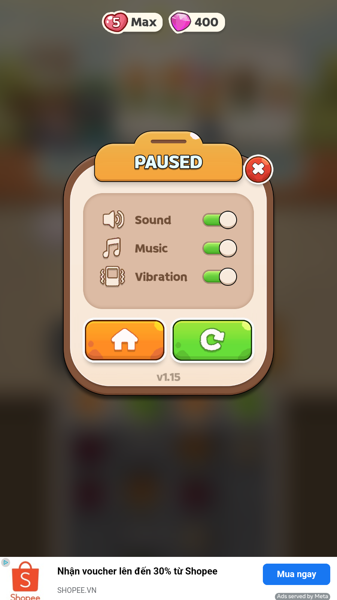

Âm thanh, nhạc và rung
Mô tả
- Một
AudioManagerCakeOrderduy nhất (scene InitManagers) điều khiển mọi âm thanh qua một AudioMixer 9 nhóm: Master → UI, SFX (Interaction, Cooking, Customers, Ambient) và Weather → Music. - Bản 1.15 có 450 clip: 22 nhạc nền (mỗi map một bài Home và một bài gameplay), 4 âm nền lặp, 424 hiệu ứng; nhạc nạp bằng Addressable theo map và chuyển bài bằng fade 2 s.
- 3 công tắc Settings lưu PlayerPrefs
SFXActive/MusicActive/HapticActive(mặc định 1): Sound tắt cả SFX lẫn âm UI, Music chỉ tắt nhạc, Vibration tắt rung; game không có thanh chỉnh âm lượng. - Popup đè gameplay hạ nhạc và SFX: Pause −3 dB và tắt hẳn SFX gameplay, màn thắng / thua, Save Me, mua Speed Up −7 dB.
- Thời tiết đổi bộ lọc và hiệu ứng (lọc thấp / cao, méo, vang, chorus) của nhóm Weather chứa nhạc, nền theo thời tiết mang âm nền riêng (chim, mưa, mưa lớn, sóng); Speed Up tăng tốc nhạc 1,2×.
- Rung dùng preset Nice Vibrations: chạm nhẹ (LightImpact) cho nút, chạm nguyên liệu, giao món; Success khi thắng.
Thiết kế chi tiết
Tóm tắt thiết kế
- Code Một manager, một mixer 9 nhóm: Master → UI, SFX (Interaction, Cooking, Customers, Ambient), Weather → Music. Công tắc Sound tắt SFX + UI, Music chỉ tắt nhạc (
AudioManagerCakeOrder.ApplySfxConfig). - APK 22 bài nhạc cho 11 map (Home + gameplay, 31–66 s, lặp), nằm trong thư mục từng map và nạp bằng Addressable; burger không khai báo nhạc Home nên Home dùng
HomeControllerCookOrder._defaultBgmMusic(bgm_menu_map1_loop, suy luận từ catalog). - Code Popup tự khai báo mức hạ nhạc: Pause −3 dB và tắt hẳn tiếng bếp / khách; thắng / thua, Save Me, mua Speed Up −7 dB (
UICakePopup.DuckLevel,SceneMainUI.RefreshAudioDuck). - APK Thời tiết là một lớp âm thanh: mưa thêm méo 0,3 và vang 0,4, lạnh cắt trầm 600 Hz + vang 0,8, bão lọc cao 12 275 Hz + vang 0,6 + chorus 0,5; nền mưa / bão có vòng lặp tiếng mưa riêng (
WeatherAudioProfileSO). - Code Speed Up không chỉ tua nhanh: nhạc 1,2×, giọng khách 1,1×, tiếng nấu theo tốc độ game, tiếng chạm giữ nguyên để không méo (
AudioManagerCakeOrder.ApplySoundTimeScale). - APK Rung dùng preset Nice Vibrations, 52 / 57 trigger là LightImpact; thắng là Success, nhận thưởng thêm MediumImpact; clip rung Lofelt duy nhất (Award1) không được gắn ở đâu.
- APK Hai snapshot LowEnd / HighEnd giống hệt nhau và
_silenceHeavyDspOnLowEndtắt: máy yếu vẫn chạy đủ méo / vang / chorus của thời tiết. - Nhận định Không có thanh âm lượng dù code đọc
MusicVolume/SFXVolume: thiết kế chọn 3 công tắc đơn giản, mức trộn do studio cố định (nhạc 0,95).
Luồng người chơi từng bước
- Khởi độngHệ thống CodeInitManagers bật manager: đọc 3 công tắc, đặt bus, snapshot theo máy, thời tiết hiện tại.
- Ở HomeHệ thống CodePhát nhạc Home của map đang chọn (fade 2 s); nền thời tiết mang âm nền; đổi thời tiết trộn trong 1,5 s.
- Chỉnh âm thanhNgười chơi PlaytestSettings / Pause có Sound, Music, Vibration (mặc định bật).

Settings 1.15: 3 công tắc Sound / Music / Vibration đều bật (giá trị mặc định 1 của SFXActive / MusicActive / HapticActive) - Vào levelHệ thống CodeĐổi sang nhạc gameplay của map, áp âm thanh thời tiết của level ngay lập tức.
- ChơiNgười chơi CodeChạm, nấu, giao món có SFX biến tấu cao độ ±10 % và rung LightImpact; Speed Up làm nhạc nhanh 1,2×.
- Pause / popupGiao diện PlaytestPause hạ nhạc 3 dB, tắt tiếng bếp và khách; popup kết quả hạ 7 dB.Mức dB đọc từ scene InitManagers (APK), ảnh chỉ cho thấy menu.

Menu PAUSED trong level: mở menu này hạ nhạc 3 dB và tắt tiếng bếp / khách - Kết quảGiao diện APKMàn thắng phát sfx_win_game kèm rung Success; nhận thưởng thêm rung MediumImpact.

Mixer: nhóm, hiệu ứng và công tắc
| Nhóm | Thuộc nhóm | Hiệu ứng | Tham số code | Tắt bởi |
|---|---|---|---|---|
| Master | - | Attenuation, Compressor | - | - |
| UI | Master | Attenuation | UIVolume | Sound |
| SFX | Master | Attenuation | SFXVolume (+ duck) | Sound |
| SFX_Interaction | SFX | Attenuation | SFXInteractionVolume (Pause tắt) | Sound |
| SFX_Cooking | SFX | Attenuation, Duck Volume (giọng khách nén tiếng nấu) | SFXCookingVolume (Pause tắt) | Sound |
| SFX_Customers | SFX | Attenuation, Send → Duck của SFX_Cooking | SFXCustomerVolume (Pause tắt), Duck_Customer_Thresh | Sound |
| Ambient | SFX | Attenuation, Send → Duck của Music | AmbientVolume = 1, Duck_Thunder_Thresh | Sound (qua nhóm SFX) |
| Weather | Master | Attenuation, Highpass, Lowpass, Distortion, SFX Reverb, Chorus | Master_Lowpass / Highpass / Distortion_Mix / Reverb_Mix / Chorus_Mix | - |
| Music | Weather | Attenuation, Pitch Shifter, Duck Volume | MusicVolume (+ duck), MusicSpeed | Music |
Nguồn: Mixer.mixer (cây nhóm, hiệu ứng, send) + chuỗi tham số trong AudioManagerCakeOrder / WeatherAudioProfileSO. Ghép tham số với nhóm theo tên (suy luận).
Nhạc theo map
| Map | Nhạc Home | Dài (s) | Nhạc gameplay | Dài (s) |
|---|---|---|---|---|
| burger | bgm_menu_map1_loop (mặc định) | 42,49 | bgm_gameplay_map1_loop | 54,57 |
| coffee | bgm_menu_map2_loop | 42,66 | bgm_gameplay_map2_foodie_loop | 45,16 |
| sushi | bgm_menu_map3_loop | 54,23 | bgm_gameplay_map3_loop | 66,23 |
| pasta | bgm_menu_map4_pasta_loop | 42,67 | bgm_gameplay_map4_pasta_loop | 46,08 |
| icecream | bgm_menu_map5_loop | 62,57 | bgm_gameplay_map5_loop | 48,00 |
| sandwich | bgm_menu_map6_loop | 31,54 | bgm_gameplay_map6_sandwich_loop | 51,58 |
| tteokbokki | bgm_menu_map7_loop | 45,72 | bgm_gameplay_map7_loop | 49,55 |
| seafood | bgm_menu_map8_seafood_loop | 52,24 | bgm_gameplay_map8_seafood_loop | 47,40 |
| dimsum | bgm_menu_map9_dimsum | 51,42 | bgm_gameplay_map9_dimsum | 55,75 |
| pizza | bgm_menu_map10_pizza_foodie | 43,40 | bgm_gameplay_map10_pizza_foodie | 37,73 |
| bento | bgm_menu_map11_bento_foodie_loop | 61,26 | bgm_gameplay_map11_bento_foodie_loop | 55,17 |
| croissant (Preview) | - (nhạc mặc định) | - | - | - |
Clip nằm trong Map-<map>/Sounds (seafood: Map-Seafood/Audio); nhạc Home của burger ở Map-common_assets. Ghép GUID Addressable của MapAssetPackSO với clip là suy luận từ thư mục và catalog. Danh sách đủ ở Danh mục tài sản.
Âm thanh theo thời tiết (WeatherAudioProfileSO)
| Thời tiết | Lowpass (Hz) | Highpass (Hz) | Distortion | Reverb | Chorus | Âm nền của prefab nền |
|---|---|---|---|---|---|---|
| Normal (0) | 22 000 | 10 | 0 | 0 | 0 | amb_bird_loop (icecream, seafood: Amb_water_wave_loop) |
| Rainy (1) | 21 419 | 20 | 0,3 | 0,4 | 0 | amb_rain_normal_loop |
| Sunny (2) | 22 000 | 100 | 0,15 | 0,1 | 0 | amb_bird_loop / Amb_water_wave_loop |
| Freeze (3) | 22 000 | 600 | 0 | 0,8 | 0 | amb_bird_loop / Amb_water_wave_loop |
| Stormy (4) | 12 275 | 200 | 0 | 0,6 | 0,5 | amb_rain_heavy_loop |
| Autumn (5) | 22 000 | 10 | 0 | 0 | 0 | amb_bird_loop / Amb_water_wave_loop |
Mọi thời tiết: Duck_Thunder_Thresh −30 dB, Duck_Customer_Thresh −25 dB. Night / Sandstorm / Sunset không có Entry: WeatherAudioProfileSO.Get trả Entry Normal. Độ trộn 0–1 đổi sang dB bằng WeatherAudioProfileSO.AmountToDb. Riêng burger: nền Rainy / Stormy vẫn có amb_bird_loop.
Mức hạ nhạc theo popup
| Popup | DuckLevel | Nhạc + SFX | Tắt SFX gameplay |
|---|---|---|---|
| Popup thường (UICakePopup) | None | 0 dB | Không |
| Pause (UICakePauseMenuInGame) | Small | −3 dB | Có (0,3 s) |
| Thắng / thua (UIEndGameBase) | Significant | −7 dB | Không |
| Save Me / booster (UIPopupBoosterSaveMeBase) | Significant | −7 dB | Không |
| Mua Speed Up (UIPopupBuySpeedUp) | Significant | −7 dB | Không |
Giá trị getter đọc từ mã máy (mov w0, #N); nhiều popup chồng nhau thì lấy mức cao nhất. Âm UI không bị duck.
Rung (fallbackHaptic của SfxAndHapticTrigger)
| Nơi | Preset | Âm đi kèm |
|---|---|---|
| Nút, tab, popup (CommonSfx) | LightImpact | sfx_click_button, sfx_popup_open / close, sfx_tab_click, sfx_toggle_tab |
| Chạm món băng chuyền, trạm nấu xong, giao món, giao đĩa | LightImpact (gọi thẳng trong code) | theo từng trạm |
| Thắng level (_sfxWin) | Success | sfx_win_game |
| Nhận thưởng thêm (_sfxClaimBonus) | MediumImpact | sfx_claim_gem |
| Chuyển sang chế độ chơi ở Home (_sfxAndHapticTriggerOnGoToPlayMode) | Selection | không có clip |
| Kết thúc nhà hàng / xong map ở Home | None | sfx_win_game |
57 trigger trong prefab / scene của rip: 52 LightImpact, 1 Success, 1 MediumImpact, 1 Selection, 2 None; không trigger nào gắn HapticClip.
Vận dụng cho game khác
- Gói âm thanh theo nhóm mixer ngay từ đầu (UI, tương tác, nấu, khách, âm nền, nhạc) để duck, tắt khi Pause và tăng tốc từng nhóm khác nhau.
- Cho popup tự khai báo mức hạ nhạc (None / Small / Significant) thay vì để từng màn tự chỉnh âm lượng.
- Dùng thời tiết như một lớp âm thanh rẻ: bộ lọc + vang trên nhóm nhạc và một vòng lặp âm nền theo prefab nền.
- Khi tăng tốc gameplay, tăng nhẹ nhạc và giọng nói (1,1–1,2×) nhưng giữ tiếng chạm 1× để phản hồi không méo.
- Đặt rung nhẹ mặc định cho mọi nút và hành động, dành preset mạnh hơn cho khoảnh khắc thắng / nhận thưởng.
Bảng tổng hợp mọi tính năng đã làm chi tiết: FoodiePop_ThietKeChiTiet.xlsx.
Mở khóa & điểm vào
Luôn có từ lúc khởi động: AudioManagerCakeOrder.Start áp cấu hình nhạc, SFX, rung, tốc độ, snapshot theo máy và thời tiết hiện tại.
Điểm vào:
- Settings ở Home và menu Pause trong level: 3 công tắc Sound / Music / Vibration (xem trang Settings)
- Tự động: nhạc Home theo map đang chọn, nhạc gameplay khi vào level, âm nền theo nền thời tiết
- Mọi nút có
ButtonSoundhoặc popup mở / đóng phát âm UI chung kèm rung nhẹ
Cách hoạt động
- Khởi động: scene InitManagers chứa
AudioManagerCakeOrder;StartgọiApplyMusicConfig,ApplySfxConfig,ApplyHapticConfig,ApplySoundTimeScale,ApplyGameplaySfxMute,ApplyDeviceTierSnapshot(Snapshot_HighEnd hoặc Snapshot_LowEnd theoDeviceTier.IsHighEnd) rồiApplyWeather. - Bus:
SetBusVolumeđổi âm lượng 0–1 sang dB tuyến tính (1 − v) × −80 cộng mức duck, kẹp ở −80 dB; nhạc =MusicVolume× 0,95 × công tắc Music, SFX và UI =SFXVolume× 1 × công tắc Sound, Ambient luôn 1 (nằm dưới nhóm SFX nên vẫn tắt theo Sound). - Home:
HomeControllerCookOrder.PlayMapBgmAsynclấyMapAssetPackSO.GetRandomHomeMusiccủa map đang chọn; map không khai báo nhạc Home (burger) thìPlayDefaultBgmMusic;PlayMusicmặc định FadeOutFadeIn,CrossFadeLoopAudiofade vào / ra 2 s. - Vào level:
LevelPlayLoadAndSetupControl.SetUpBeforeLoadLevelScenelấyMapAssetPackSO.GetRandomGameplayMusic(không có thìStopMusic) và gọiApplyWeathervới thời tiết của level, thời gian chuyển 0 s. - SFX:
PlaySfx,PlaySfxWithPitchVariant(cao độ ngẫu nhiên 1 ± 0,1) vàPlaySfxWithFixedPitch(tối đa 8 giọng, quá thì cắt giọng cũ nhất); cùng một clip phát lại trong 0,06 s bị bỏ (PassSameClipGate).GlobalAudiophát tiếng nhảy / rơi của món với cao độ ±10 %. - Âm nền: prefab nền theo thời tiết chứa AudioSource lặp (chim, mưa, mưa lớn, sóng biển) được
AutoAssignAudioMixerGroupRuntimegán vào nhóm Ambient;ApplyWeathertrộn bộ lọc và hiệu ứng của nhóm Weather trong 1,5 s (Home) theoWeatherAudioProfileSO. - Ducking: mỗi lần ngăn xếp popup đổi,
SceneMainUI.RefreshAudioDucklấy mức duck cao nhất (UICakePopup.DuckLevel) →SetDuck(trộn 0,35 s); popup cóIsMuteGameplaySfx(Pause) →SetGameplaySfxMutedđưa 3 nhóm SFX gameplay về −80 dB trong 0,3 s. - Speed Up:
UIInLevelHUDPuzzleStyle.ApplySpeedUpFx→SetSoundTimeScale: nhạc 1,2× (pitch nhóm Music), giọng khách 1,1×, tiếng nấu theo đúng tốc độ game, tiếng tương tác giữ 1×. - Rung:
PlaySfxAndHapticphát clip rồi rung bằng HapticClip nếu có, không có thì presetfallbackHaptic; công tắc Vibration bật / tắt toàn bộ rung của Lofelt (ApplyHapticConfig).
Ảnh chụp
Bấm ảnh để phóng to, dùng phím ← → để chuyển ảnh. Nhãn màu cho biết nguồn bằng chứng của ảnh.
Số liệu chính
| Chỉ số | Giá trị | Nguồn |
|---|---|---|
| Số clip âm thanh | 450 (22 nhạc nền, 4 âm nền, 424 SFX) | Data/audio/audio.json |
| Tổng thời lượng | ≈ 2 132 s: nhạc 1 087 s, âm nền 61 s, SFX 984 s | Header AudioClip trong APK |
| Bài nhạc mỗi map | 1 Home + 1 gameplay (burger dùng nhạc Home mặc định) | MapAssetPackSO |
| Âm lượng nhạc so với SFX | 0,95 (≈ −4 dB) | AudioManagerCakeOrder.musicVolumeMul |
| Duck khi có popup | Pause −3 dB, thắng / thua / Save Me / Speed Up −7 dB | UICakePopup.DuckLevel |
| Tốc độ nhạc khi Speed Up 2× | 1,2× | _mapTimeScaleToMusicSpeed |
| Rung LightImpact | 52 / 57 trigger âm + rung | SfxAndHapticTrigger.fallbackHaptic |
Use case (16)
Bấm vào từng use case để mở. Mở/đóng tất cả
UC-01 Tắt / bật Sound
Các bước- ToggleSfx → SetSfxActive(!IsSfxActive)
- PlayerPrefs SFXActive = 0 / 1, PlayerPrefs.Save
- ApplySfxConfig: bus SFXVolume và UIVolume = SFXVolume × sfxVolumeMul × (0 hoặc 1)
- onSfxToggled báo giao diện đổi hình công tắc
| Actor | Player |
|---|---|
| Trigger | Bấm công tắc Sound ở Settings hoặc Pause |
| Điều kiện | - |
| Kết quả | Tắt: nhóm SFX (gồm cả 4 nhóm con, có Ambient) và nhóm UI về −80 dB; nhạc không đổi |
| Quy tắc / số liệu | Mặc định bật (PlayerPrefs.GetInt("SFXActive", 1)) |
| Evidence | AudioManagerCakeOrder.SetSfxActive |
UC-02 Tắt / bật Music
Các bước- ToggleMusic → SetBgmActive
- PlayerPrefs MusicActive = 0 / 1
- ApplyMusicConfig: bus MusicVolume = MusicVolume × 0,95 × (0 hoặc 1), cộng mức duck hiện tại
| Actor | Player |
|---|---|
| Trigger | Bấm công tắc Music |
| Điều kiện | - |
| Kết quả | Chỉ nhạc nền im; bài nhạc vẫn chạy ngầm nên bật lại là nghe tiếp |
| Quy tắc / số liệu | Mặc định bật |
| Evidence | AudioManagerCakeOrder.SetBgmActive |
UC-03 Tắt / bật Vibration
Các bước- ToggleHaptic → SetHapticActive
- PlayerPrefs HapticActive = 0 / 1
- ApplyHapticConfig đặt hapticsEnabled của HapticController (Lofelt)
| Actor | Player |
|---|---|
| Trigger | Bấm công tắc Vibration |
| Điều kiện | - |
| Kết quả | Mọi rung (preset và clip) tắt cùng lúc |
| Quy tắc / số liệu | Mặc định bật |
| Evidence | AudioManagerCakeOrder.ApplyHapticConfig |
UC-04 Nhạc Home theo map đang chọn
Các bước- PlayMapBgmAsync(mapId) lấy MapAssetPackSO
- GetRandomHomeMusic chọn ngẫu nhiên trong _assetHomeMusics (mỗi map hiện chỉ có 1 bài)
- Không có bài → PlayDefaultBgmMusic (_defaultBgmMusic)
- PlayMusic(AssetReference, 1, FadeOutFadeIn)
| Actor | System |
|---|---|
| Trigger | Vào Home hoặc đổi map đang chọn |
| Điều kiện | MapAssetPackSO của map đã nạp |
| Kết quả | Mỗi nhà hàng có nhạc Home riêng; burger dùng nhạc mặc định |
| Quy tắc / số liệu | Bài đang phát được giữ handle Addressable, nhả sau khi fade xong |
| Evidence | HomeControllerCookOrder.PlayMapBgmAsync |
UC-05 Nhạc gameplay khi vào level
Các bước- SetUpBeforeLoadLevelScene lấy GetRandomGameplayMusic
- Có bài → PlayMusic (FadeOutFadeIn); không có → StopMusic
- ApplyWeather(weatherEffect của level, 0 s)
| Actor | System |
|---|---|
| Trigger | Nạp level |
| Điều kiện | - |
| Kết quả | Nhạc gameplay riêng từng map; thời tiết âm thanh đổi tức thì lúc vào level |
| Quy tắc / số liệu | 11 map chơi được đều có 1 bài gameplay; croissant (Preview) không có nhạc |
| Evidence | MapAssetPackSO.GetRandomGameplayMusic |
UC-06 Âm thanh theo thời tiết
Các bước- ApplyWeather lưu CurrentWeather, tìm Entry trong WeatherAudioProfileSO
- Lần đầu hoặc thời gian ≤ 0: WriteWeather ghi ngay; còn lại IEBlendWeather trộn trong _weatherBlendSeconds (1,5 s)
- WriteFilters: Master_Lowpass, Master_Highpass, Duck_Thunder_Thresh, Duck_Customer_Thresh; WriteDsp: Master_Distortion_Mix, Master_Reverb_Mix, Master_Chorus_Mix (độ trộn 0–1 đổi sang dB)
| Actor | System |
|---|---|
| Trigger | Home đồng bộ thời tiết hoặc level bắt đầu |
| Điều kiện | Có _weatherProfiles |
| Kết quả | Mưa nghe hơi méo và vang, lạnh nhiều vang và cắt trầm, bão thêm chorus và cắt cao |
| Quy tắc / số liệu | Thời tiết không có Entry (Night, Sandstorm, Sunset) dùng Entry Normal; profile rỗng thì log "no weather audio entry" và giữ nguyên |
| Evidence | AudioManagerCakeOrder.ApplyWeather |
UC-07 Hạ nhạc khi mở popup
Các bước- RefreshAudioDuck duyệt _popupStack, lấy DuckLevel lớn nhất
- SetDuck(level): Small = _duckSmallDb, Significant = _duckSignificantDb
- IEBlendDuck trộn _currentDuckDb trong 0,35 s rồi áp lại bus Music và SFX
| Actor | System |
|---|---|
| Trigger | Popup vào / ra ngăn xếp |
| Điều kiện | - |
| Kết quả | Nhạc và SFX gameplay nhỏ lại, âm UI của popup giữ nguyên |
| Quy tắc / số liệu | Popup thường DuckLevel None; Pause Small (−3 dB); EndGame, SaveMe / booster, BuySpeedUp Significant (−7 dB) |
| Evidence | SceneMainUI.RefreshAudioDuck |
UC-08 Pause tắt tiếng gameplay
Các bước- UICakePauseMenuInGame.IsMuteGameplaySfx = true
- RefreshAudioDuck → SetGameplaySfxMuted(true)
- ApplyGameplaySfxMute trộn SFXInteractionVolume, SFXCookingVolume, SFXCustomerVolume về −80 dB trong 0,3 s
| Actor | Player |
|---|---|
| Trigger | Mở menu Pause trong level |
| Điều kiện | - |
| Kết quả | Bếp và khách im, nhạc chỉ hạ 3 dB, nút bấm vẫn có tiếng |
| Quy tắc / số liệu | Đóng Pause thì trả lại mức dB cũ đã lưu |
| Evidence | AudioManagerCakeOrder.SetGameplaySfxMuted |
UC-09 Bỏ duck khi ẩn bảng kết quả
Các bước- UIEndGameBase.SetUIVisible / UIPopupBoosterSaveMeBase.SetUIVisible
- SetDuckSuspended(true) → duck về 0 dB; hiện lại thì SetDuckSuspended(false)
| Actor | Player |
|---|---|
| Trigger | Ẩn UI màn thắng / thua hoặc Save Me để nhìn bàn |
| Điều kiện | Popup Significant đang mở |
| Kết quả | Nhạc lên lại đủ to khi người chơi xem bàn chơi |
| Quy tắc / số liệu | - |
| Evidence | AudioManagerCakeOrder.SetDuckSuspended |
UC-10 Speed Up tăng tốc âm thanh
Các bước- ApplySpeedUpFx → SetSoundTimeScale(tốc độ game)
- ApplySoundTimeScale: nhạc theo _mapTimeScaleToMusicSpeed (đặt vào tham số MusicSpeed), khách theo _mapTimeScaleToSfxCustomerSpeed (≤ 1,2), tương tác theo _mapTimeScaleToSfxInteractionSpeed (≤ 1,1), nấu = tốc độ game
- ApplySfxSpeedToSources đổi pitch các AudioSource đã đăng ký
| Actor | System |
|---|---|
| Trigger | Bật Speed Up trong level |
| Điều kiện | - |
| Kết quả | Ở 2×: nhạc 1,2×, khách 1,1×, tiếng nấu 2×, tiếng tương tác 1× |
| Quy tắc / số liệu | Đường cong trong scene khác giá trị khởi tạo trong code (khách 1,2, tương tác 1,1); scene thắng |
| Evidence | AudioManagerCakeOrder.ApplySoundTimeScale |
UC-11 Tiếng nhảy / rơi món có biến tấu
Các bước- GlobalAudio.Play(Land / Jump / LandServeShelf)
- PlayConfigured lấy GlobalSfxConfig (track SfxInteraction, volume 1, pitchVariance 0,1)
- PlaySfxWithPitchVariant: pitch = tốc độ tương tác × Random(0,9; 1,1)
| Actor | System |
|---|---|
| Trigger | Món nhảy lên, đáp xuống lưới hoặc kệ phục vụ |
| Điều kiện | - |
| Kết quả | Chuỗi món rơi liên tục không nghe lặp máy móc |
| Quy tắc / số liệu | Clip: sfx_item_landing_normal, sfx_item_jump, sfx_item_landing_end |
| Evidence | GlobalAudio.PlayConfigured |
UC-12 Chống chồng tiếng
Các bước- PassSameClipGate so unscaledTime với lần phát trước của clip
- Cách nhau < 0,06 s → bỏ lượt phát
| Actor | System |
|---|---|
| Trigger | Cùng một clip được gọi nhiều lần liền nhau |
| Điều kiện | sameClipMinInterval > 0 |
| Kết quả | Combo nhiều món cùng lúc không bị cộng to |
| Quy tắc / số liệu | Áp cho PlaySfx, PlaySfxWithPitchVariant, PlaySfxWithFixedPitch (trừ khi ignoreSameClipGate) |
| Evidence | AudioManagerCakeOrder.PassSameClipGate |
UC-13 Âm và rung UI chung
Các bước- AudioManagerCakeOrder.Play(CommonSfx) tìm dòng trong commonSfxTriggerConfigs
- PlaySfxAndHaptic(trigger, track UI)
- haptic trống → HapticPatterns.PlayPreset(fallbackHaptic = LightImpact)
| Actor | Player |
|---|---|
| Trigger | Bấm nút, đổi tab, mở / đóng popup |
| Điều kiện | - |
| Kết quả | Mỗi chạm UI có tiếng click và rung nhẹ |
| Quy tắc / số liệu | 7 dòng CommonSfx dùng 5 clip; TabClick, SwitchTab dùng lại clip popup |
| Evidence | AudioManagerCakeOrder.PlaySfxAndHaptic |
UC-14 Rung khi chơi
Các bước- ConveyorPickup.TryTap, StationOrchestrator.HandleComplete, AutoCompleteOrderFx.Deliver, ServeShelfController (giao đĩa) gọi PlayPreset(LightImpact)
- Màn thắng: _sfxWin rung Success, _sfxClaimBonus rung MediumImpact
| Actor | System |
|---|---|
| Trigger | Chạm món trên băng chuyền, trạm nấu xong, giao món |
| Điều kiện | Vibration bật |
| Kết quả | Rung ngắn đánh dấu từng hành động có kết quả |
| Quy tắc / số liệu | 57 trigger âm + rung trong rip: 52 LightImpact, 1 Success, 1 MediumImpact, 1 Selection, 2 None |
| Evidence | ConveyorPickup.TryTap |
UC-15 Âm của module R1 (Rank, Team, sự kiện)
Các bước- ButtonSound.Awake gắn listener → PlaySound(ButtonClick)
- PlaySound chuyển ButtonClick / PopupOpen / PopupClose sang CookOrderBridge.PlayUiSound; DropItemCollect, DropGoldCollect, StarCollect sang ItemSelect
- DropItemSpawn / DropGoldSpawn phát clip rơi đồ (cách nhau ≥ 0,08 s); UnlockFeature phát trigger riêng (không có thì như PopupOpen)
| Actor | System |
|---|---|
| Trigger | Nút có ButtonSound hoặc code R1 gọi AudioController.PlaySound |
| Điều kiện | - |
| Kết quả | Module R1 dùng chung bộ âm UI của game |
| Quy tắc / số liệu | SoundID còn lại (CompassActive, Win, Lose, Freeze*, Giftbox*, TapChest, BoosterAnim*) không phát gì |
| Evidence | AudioController.PlaySound |
UC-16 Máy yếu
Các bước- ApplyDeviceTierSnapshot: DeviceTier.IsHighEnd → Snapshot_HighEnd, ngược lại Snapshot_LowEnd (TransitionTo 0 s)
| Actor | System |
|---|---|
| Trigger | Khởi động |
| Điều kiện | - |
| Kết quả | Hai snapshot trong APK giống hệt nhau (72 / 72 giá trị) và _silenceHeavyDspOnLowEnd = 0: máy yếu nghe như máy mạnh |
| Quy tắc / số liệu | Tooltip trong code giải thích: chỉ giảm độ trộn không tiết kiệm CPU nên tắt |
| Evidence | AudioManagerCakeOrder.ApplyDeviceTierSnapshot |
Cấu hình (18)
Gộp mọi nguồn: const trong code, giá trị mặc định trong APK, storage key, AB test, cờ server.
| Nguồn | Key | Kiểu | Giá trị | Ý nghĩa | Nơi định nghĩa |
|---|---|---|---|---|---|
| code const | MIXER_GROUP_* | string | Music, SFX, Ambient, UI, SFX_Interaction, SFX_Cooking, SFX_Customers | Tên nhóm mixer theo AudioTrack (Music 0, Ambient 1, Sfx 2, UI 3, SfxInteraction 4, SfxCooking 5, SfxCustomer 6) | AudioManagerCakeOrder |
| storage key | MusicActive / SFXActive / HapticActive | int (PlayerPrefs) | 1 = bật (mặc định), 0 = tắt | 3 công tắc Settings | AudioManagerCakeOrder.IsMusicActive / IsSfxActive / IsHapticActive |
| storage key | MusicVolume / SFXVolume | float (PlayerPrefs) | mặc định 1; không có UI nào gọi SetMusicVolume / SetSfxVolume | Âm lượng nhạc / SFX (chưa dùng) | AudioManagerCakeOrder.ApplyMusicConfig |
| asset | musicVolumeMul / sfxVolumeMul / ambientVolumeMul | float | 0,95 / 1 / 1 | Hệ số nhân trước khi đổi sang dB | InitManagers.unity (AudioManagerCakeOrder) |
| code | SetBusVolume | công thức | dB = max(−80, (1 − clamp(v, 0, 1)) × −80 + duckDb) | Âm lượng tuyến tính theo dB: 0,95 → −4 dB | AudioManagerCakeOrder.SetBusVolume |
| asset | _duckSmallDb / _duckSignificantDb / _duckBlendSeconds | float | −3 / −7 / 0,35 (giá trị khởi tạo trong code: −6 / −14 / 0,25) | Mức hạ nhạc + SFX khi có popup | InitManagers.unity |
| asset | _gameplaySfxMuteBlendSeconds | float | 0,3 | Thời gian tắt SFX gameplay khi Pause | InitManagers.unity |
| asset | sameClipMinInterval / _maxPitchedVoices | float / int | 0,06 s / 8 | Chặn lặp clip; số giọng cao độ cố định tối đa | InitManagers.unity |
| code const + asset | pitchVariance | float | mặc định tham số 0,1; GlobalSfxConfig Land / Jump / LandServeShelf = 0,1 (Range 0–0,5) | Cao độ ngẫu nhiên trong [1 − v, 1 + v] | AudioManagerCakeOrder.PlaySfxWithPitchVariant, GameplayHUD.unity (GlobalAudio) |
| asset | fadeDuration / fadeOutDuration | float | 2 / 2 (track nhạc và track ambient) | Thời gian fade khi đổi bài | InitManagers.unity (CrossFadeLoopAudio) |
| asset | _mapTimeScaleToMusicSpeed / SfxCustomerSpeed / SfxInteractionSpeed | AnimationCurve | tốc độ game 1 → 2: nhạc 1 → 1,2; khách 1 → 1,1; tương tác 1 → 1 (trần code 1,2 và 1,1) | Âm thanh nhanh lên khi Speed Up | InitManagers.unity, AudioManagerCakeOrder.ApplySoundTimeScale |
| asset | _weatherBlendSeconds | float | 1,5 (vào level truyền 0) | Thời gian trộn âm thanh khi đổi thời tiết | InitManagers.unity |
| asset | WeatherAudioProfileSO._entries | Entry[6] | Normal, Rainy, Sunny, Freeze, Stormy, Autumn (bảng ở Thiết kế chi tiết) | Bộ lọc + DSP theo thời tiết; trung tính = lowpass 22 000 Hz, highpass 10 Hz | Assets/MonoBehaviour/WeatherAudioProfileSO.asset |
| asset | Snapshot_LowEnd / Snapshot_HighEnd | AudioMixerSnapshot | 72 giá trị giống hệt nhau; _silenceHeavyDspOnLowEnd = 0 | Chưa phân biệt âm thanh theo cấu hình máy | Assets/AudioMixerController/Mixer.mixer |
| asset | commonSfxTriggerConfigs | SfxAndHapticTrigger[7] | Click sfx_click_button, ItemSelect sfx_toggle_tab, PopupOpen / SwitchTabOpen sfx_popup_open, PopupClose / SwitchTabClose sfx_popup_close, TabClick sfx_tab_click; volume 1, fallbackHaptic 4 (LightImpact) | Âm + rung UI chung | InitManagers.unity |
| asset | SfxAndHapticTrigger.fallbackHaptic | HapticPatterns.PresetType | 57 trigger: 52 LightImpact (4), Success (1) cho _sfxWin, MediumImpact (5) cho _sfxClaimBonus, Selection (0) cho _sfxAndHapticTriggerOnGoToPlayMode, None (−1) cho kết thúc nhà hàng / xong map | Preset rung khi trigger không gắn HapticClip (mọi trigger đều không gắn) | prefab / scene trong rip |
| asset | HapticClip Award1 | HapticClip | Lofelt Studio, nguồn "Award 1.wav", 0,96 s; 0 asset tham chiếu | Clip rung duy nhất trong APK, không được dùng | Assets/MonoBehaviour/Award1.asset |
| code const | AudioController.DropSpawnMinInterval | float | 0,08 | Khoảng cách tối thiểu giữa 2 tiếng rơi đồ của module R1 | _GAME.Device.AudioController |
Giao diện (UI)
| Element | Class | Mục đích |
|---|---|---|
| 3 công tắc Sound / Music / Vibration | CakeOrder.UICakeSettingMenuBase | Gọi ToggleSfx / ToggleMusic / ToggleHaptic |
| Mọi popup (âm mở / đóng + mức duck) | CakeOrder.BaseUI.UICakePopup | PlayOpenCloseSfx, DuckLevel, IsMuteGameplaySfx |
| Menu Pause | CakeOrder.InGame.UICakePauseMenuInGame | Duck Small + tắt SFX gameplay |
| Nút của module R1 | _GAME.GameUI.ButtonSound | Tiếng click khi bấm |
Storage keys
MusicActive SFXActive HapticActive MusicVolume (đọc, chưa có UI ghi) SFXVolume (đọc, chưa có UI ghi)
Còn thiếu / chưa xác minh
- Liên kết GUID Addressable trong
MapAssetPackSO→ clip nhạc suy ra từ thư mục clip (Map-<map>/Sounds) và chuỗi đường dẫn đứng cạnh GUID trongcatalog.bin; chưa giải đầy đủ catalog Addressables. - Tên tham số mixer expose trong rip bị mã hoá (18 tham số tên ngẫu nhiên); khớp tham số code (
MusicVolume,SFXVolume...) với nhóm dựa vào tên nhóm (suy luận). - Chưa ghi âm phiên chơi: độ lớn thật, cảm giác duck và rung chưa đo trên máy (playtest 16/11 chỉ chụp 3 công tắc ở trạng thái bật).
AmbientVolumekhông gắn công tắc nào; âm nền tắt theo Sound chỉ vì nhóm Ambient nằm dưới nhóm SFX (đọc cấu trúc mixer, chưa kiểm trên máy).- 4 clip không file nào tham chiếu (rain, thunder, sfx_transition_open_sence / close_sence) chưa tìm thấy nơi nạp bằng code.
Tính năng liên quan
Cài đặt, ngôn ngữ, đánh giá & phiên bản mới Thời tiết của level Tăng tốc x2 Cứu màn (Save Me) Luồng màn: vào, thắng, thua Bản đồ Home, sương mù và diễu hành khách Màn Home & thứ tự popup Khách và phiếu gọi món Dụng cụ nấu theo map Skin theo mùa (Seasonal Skin, Halloween) Day, map và mở nhà hàng
Nguồn đã đọc
_analysis/code/decompiled/CakeOrder/CakeOrder.AudioManagerCakeOrder.c (+ AddressableAudioTrack, IEBlendDuck, IEBlendWeather)_analysis/code/decompiled/CakeOrder/CakeOrder.BaseUI.SceneMainUI.c (RefreshAudioDuck)_analysis/code/decompiled/CakeOrder/CakeOrder.Home.HomeControllerCookOrder+_PlayMapBgmAsync_d__58.c_analysis/code/decompiled/R1Plugins/_GAME.Device.AudioController.c, Tools/code/ghidra/fp_disasm.py (PlaySound, ApplySfxConfig, getter DuckLevel / IsMuteGameplaySfx, preset rung tại nơi gọi)_analysis/code/stubs/CakeOrder/CakeOrder.AudioManagerCakeOrder.cs, CakeOrder.DataSO.WeatherAudioProfileSO.cs, AnhPD.FoodOrder.GlobalSfxConfig.cs_rip/ExportedProject/Assets/_Production/Map-common_assets/Scenes/InitManagers.unity, GameplayHUD.unity; Assets/AudioMixerController/Mixer.mixer_apk/unz/assets/aa/catalog.bin (chuỗi đường dẫn cạnh GUID nhạc)Data/audio/audio.json, Data/config/WeatherAudioProfileSO.json, HapticClip.json, Data/maps/*/asset_pack.json_analysis/live/fp_20261116/RESULTS_LIVE.md (home_tap_settings, lvl13_pause_open)